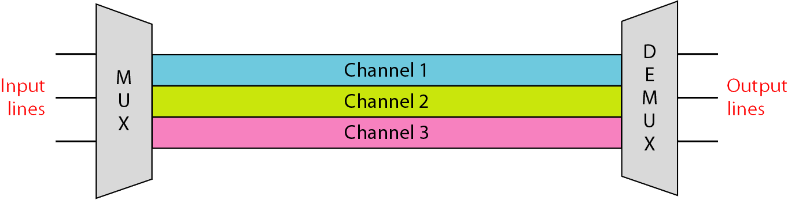
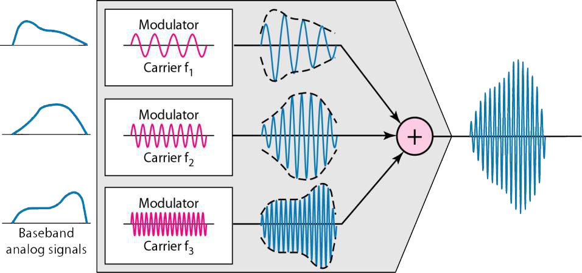
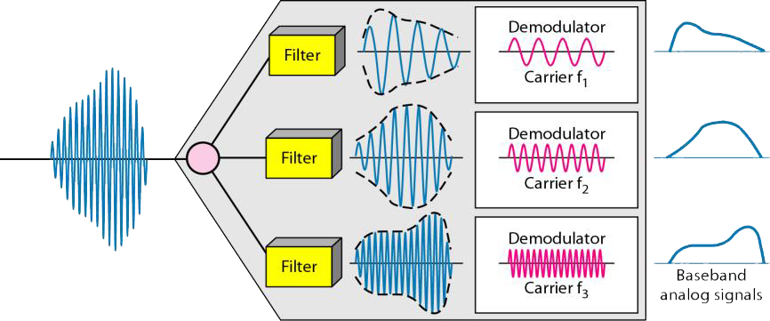
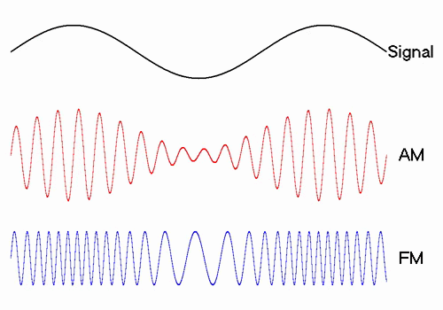
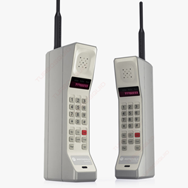
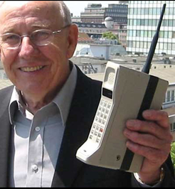
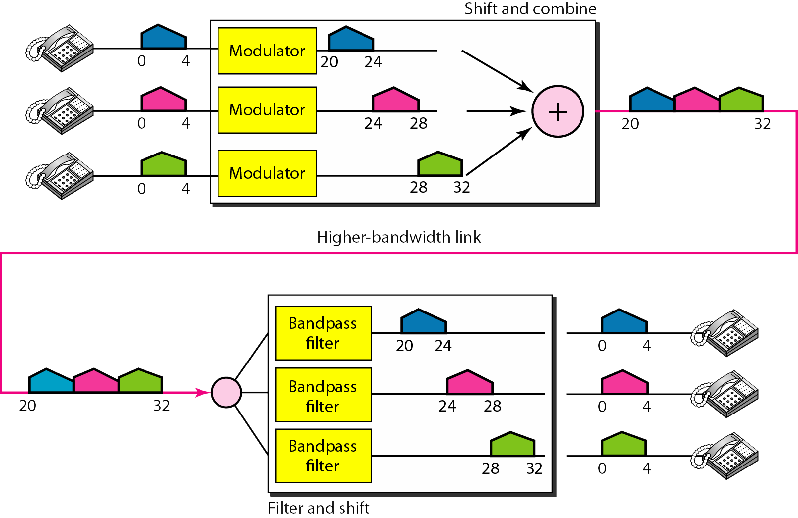

Definición
Multiplexación por división de frecuencia
Esta es una técnica analógica que se puede aplicar cuando el ancho de banda de un enlace (en hercio o hertz ) es mayor que los anchos de banda combinados de las señales a transmitir.
Figura 2. Multiplexación por división de frecuencia.

Proceso de multiplexación.
- Las señales generadas por cada emisor se modulan sobre distintas frecuencias portadoras.
- Las señales moduladas resultantes de modulan después en una única señal compuesta.
- La señal compuesta se envía sobre el enlace que tiene un ancho de banda suficiente para acomodarlas.
Figura 3. Proceso de multiplexación FDM.

Proceso de demultiplexación.
- El demultiplexor usa una serie del filtros para descomponer la señal multiplexada en las señales componentes que la constituyen.
- Las señales individuales se pasan después a un demulador que las separa en sus portadoras y las pasa a las líneas de salida.
Figura 4. Proceso de demultiplexación FDM

Aplicaciones
- Radio AM. La radio utiliza el aire como medio de transmisión, una banda especial comprendida entre los 530 y los 1700 KHz se asigna a la radio AM, todas las estaciones necesitan compartir esta banda, cada estación AM necesita un ancho de banda de 10 KHz.
- Radio FM. La situación similar ocurre en FM, sin embargo esta tiene una banda mas amplia de 88 a 198 MHz debido a que cada estación necesita un ancho de banda de 200 KHz.
- Televisión. Otro uso común de la FDM es la televisión, cada canal de tv tiene su propio ancho de banda de 6 MHz.
Figura 5. Espectro AM y FM.

- Teléfonos de 1ra generación (1G). Cada usuario tiene asignado dos canales de 30 KHz, uno para enviar voz y otro para recibir, la señal de voz, que tiene un ancho de banda de 3 KHz, se modula utilizando FM.
Figura 6. Teléfonos de primera generación (1G).
 
Características y Datos importantes
Características:
- Tecnología muy experimentada y fácil de implementar.
- Gestión de recursos rígida y poco apta para flujos de tránsito variable.
- Requiere duplexor de antena para transmisión dúplex.
- Se asignan canales individuales a cada usuario.
- Los canales son asignados de acuerdo a la demanda.
- Normalmente FDMA se combina con multiplexing FDD.
Datos importantes:
- Se implementa fácilmente. En la radio o la televisión, no hay necesidad de un multiplexor o desmultiplexor físico; siempre que las estaciones transmitan utilizando diferentes frecuencias portadoras.
- En telefonía móvil se necesita una estación base para asignar la frecuencia portadora al usuario.No hay suficiente ancho de banda en una celda para asignar ancho de banda a cada usuario. Cuando un usuario cuelga, su ancho de banda es asignado a otro. Se denomina FDMA.
Ejemplo
Problema:
Asuma un canal de voz que ocupa un ancho de banda de 4 KHz. Se necesita combinar tres canales de voz con un enlace con un ancho de banda de 12 KHz, de 20 a 32 KHz. Muestre la configuración utilizando el dominio de frecuencia. Asuma que no hay bandas de guarda.
Solución:
Se desplaza (modula) cada uno de los tres canales de voz a un ancho de banda diferente, como se muestra en la siguiente imagen. Se utiliza el ancho de banda de 20 a 24 KHz para el primer canal, el ancho de banda de 24 a 28 KHz para el segundo y el ancho de banda de 28 a 32 KHz para el tercer canal. Luego se combinan como se muestra en la figura. En el receptor, cada canal recibe la señal entera, utilizando un filtro para separar su propia señal. El primer canal utiliza un filtro que pasa las frecuencias comprendidas entre 20 y 24 KHz y descarta el resto de frecuencias. El segundo canal utiliza un filtro que pasa las frecuencias comprendidas entre 24 y 28 KHz, y el tercero utiliza un filtro que pasa las frecuencias comprendidas entre 28 y 32 KHz. Cada canal a continuación desplaza la frecuencia para que comience en cero.
Figura 7.Solución al problema FDM.
